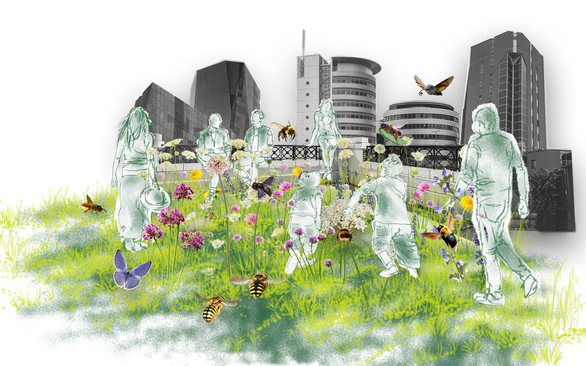
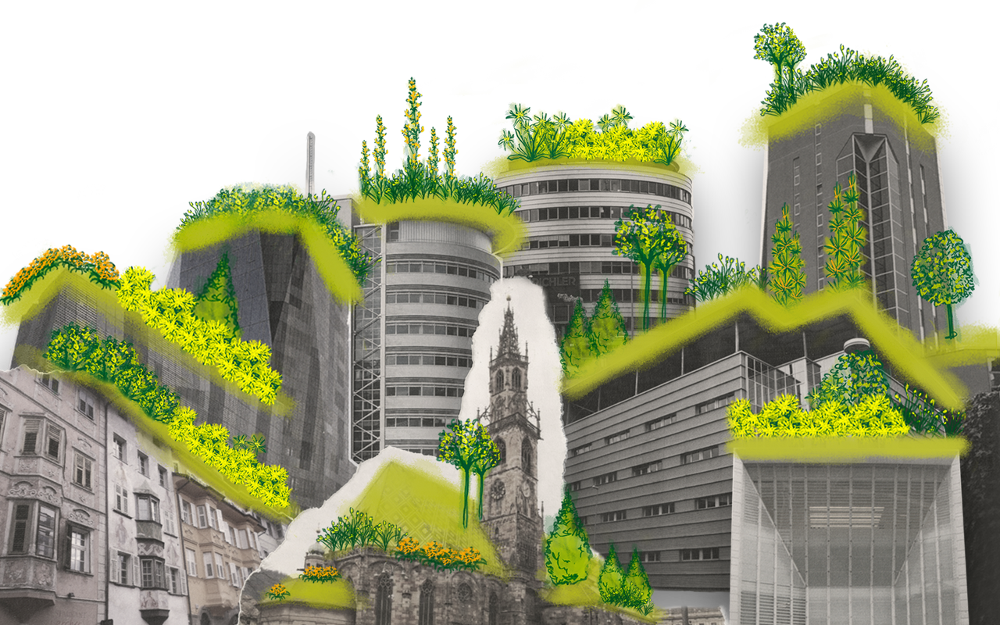
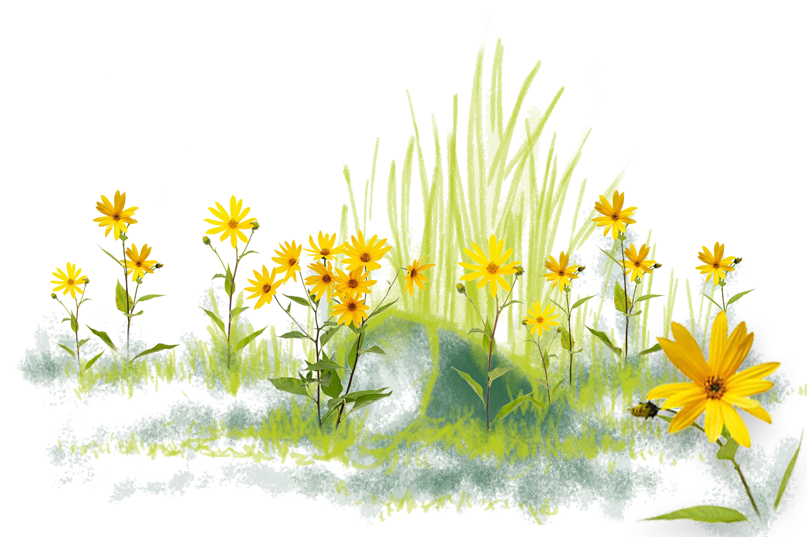

Ecosistema urbano
La simbiosi, è definita come l’associazione intima e protratta tra due o più organismi di specie differenti. Gli individui di entrambe le specie migliorano la loro sopravvivenza, crescita e riproduzione. Nel mutualismo non simbiotico i due organismi non coesistono fisicamente, pur dipendendo l’uno dall’altro per qualche funzione essenziale. Sono rapporti per lo più facoltativi e rappresentano una forma di facilitazione reciproca come per esempio tra insetti e fiori. Gli insetti impollinatori hanno avuto un importante ruolo nell'evoluzione dei fiori e si sono stabilite tra di essi delle specifiche alleanze. I profumi e i colori dei fiori servono proprio ad attirare gli insetti. Per esempio gli occhi degli insetti sono sensibili ai raggi UV, e fotografando un fiore con una pellicola sensibile a questi raggi possiamo notare che esso appare molto diverso: quelle che per noi, ad esempio, sono solo sottili venature, sono per gli insetti linee marcate, che rappresentano ovviamente segnali che indicano dove posarsi.

Insetti impollinatori
Api, vespe e altri insetti sono in simbiosi mutualistica con numerose specie di piante, che vengono da loro impollinate mentre si nutrono del nettare prodotto dai fiori, e questo tipo di associazione è molto importante per l’uomo, poiché la maggior parte delle specie coltivate dipendono dall’interazione fra questi organismi, per produrre i frutti!
Il rapporto mutualistico tra piante e insetti impollinatori è diventato ormai così stretto in milioni di anni di coevoluzione e specializzazione che le une senza gli altri si estinguerebbero, e viceversa! Guai quindi a dimenticare o sottovalutare i delicati equilibri presenti negli ecosistemi di tutto il mondo, messi purtroppo a dura prova dal nostro inquinamento, surriscaldamento globale e deforestazione massiva. In natura piante e insetti si sono coevoluti insieme sviluppando stretti rapporti di simbiosi, il più famoso dei quali è l’impollinazione. Forma, colore, profumo del fiore, per gli insetti sono degli indicatori su dove trovare il cibo e quando il fiore è ricco di nettare. E’ di fatto un complesso linguaggio tra piante e animali che le specie selvatiche conservano intatto, a differenza delle varietà selezionate dall’uomo, che per creare fiori appariscenti e colorati, ha modificato di fatto questi cartelli stradali.
